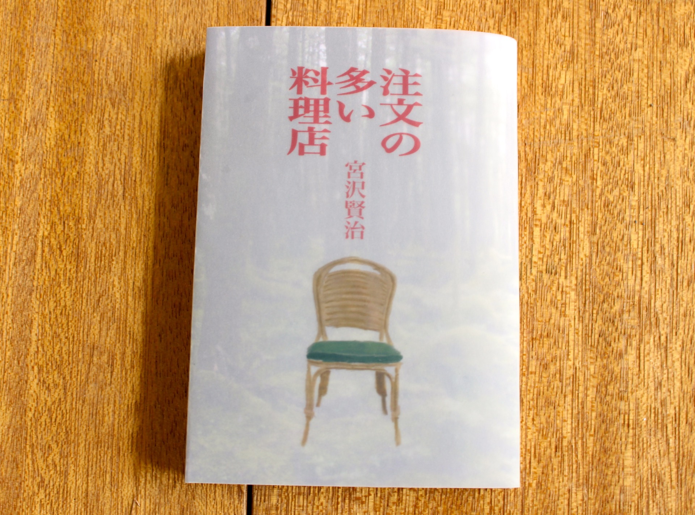
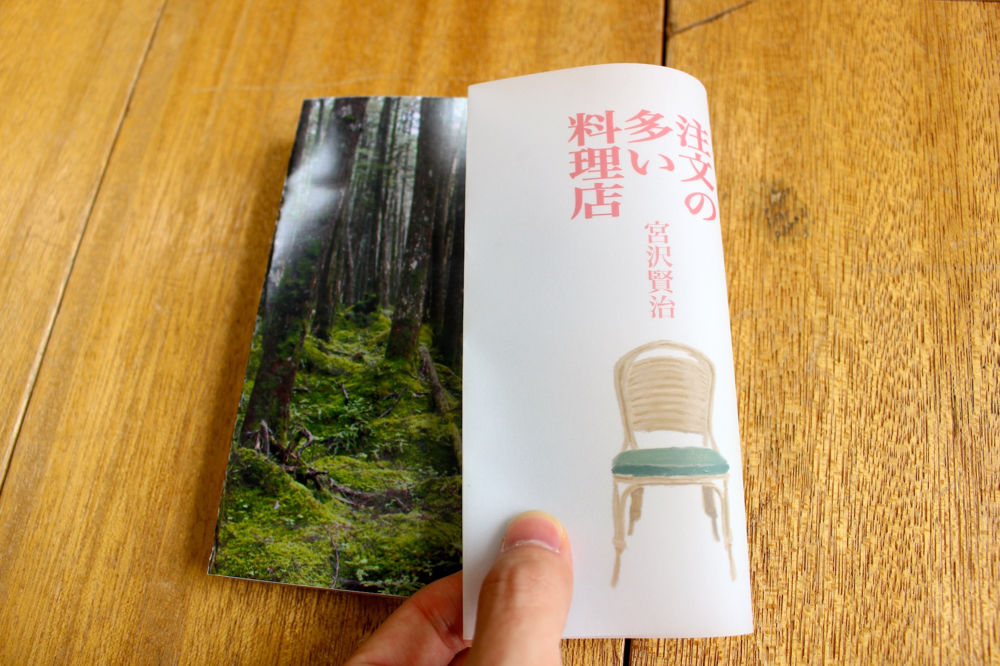
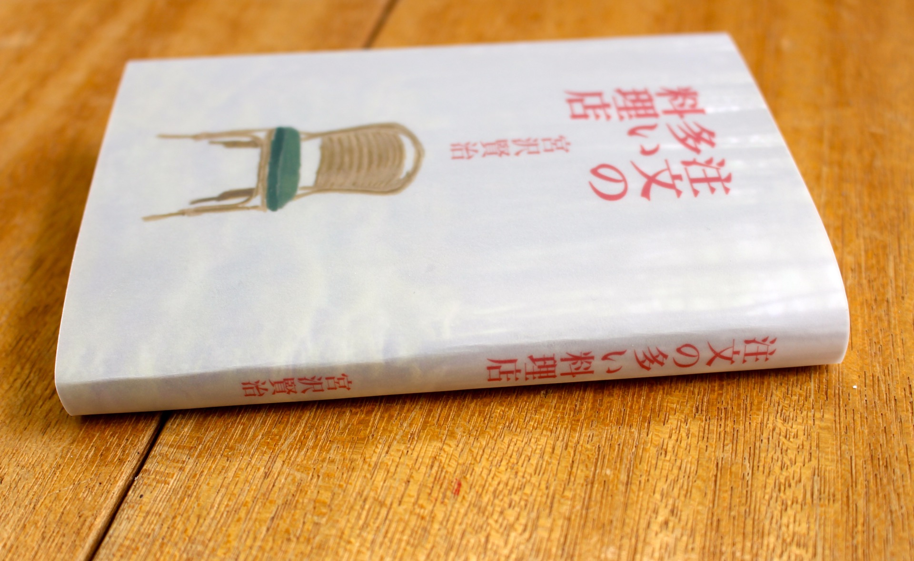
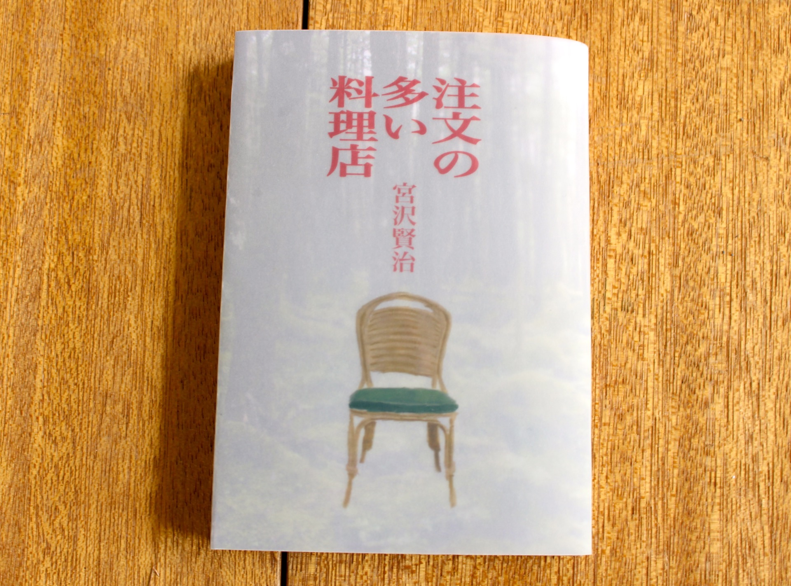
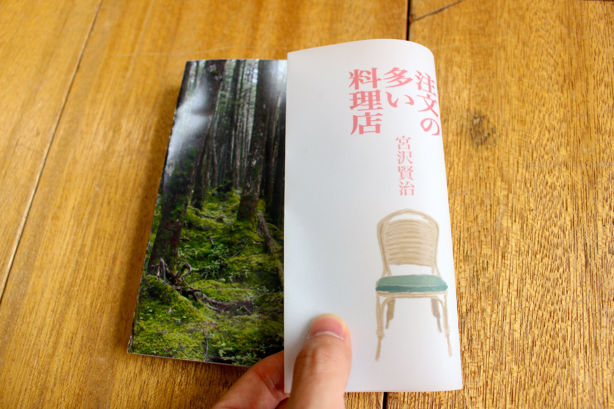
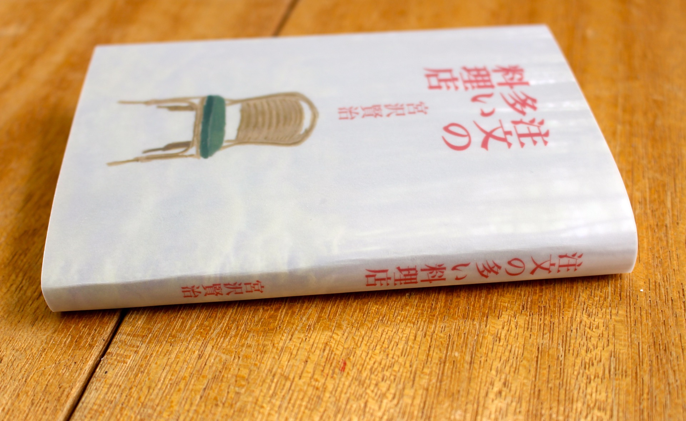

文庫本のカバーデザインです。
授業課題にて、宮沢賢治の短編集「注文の多い料理店」のブックカバーデザインをしました。 作品の舞台である「山の中で入った幻覚のレストラン」を象徴的に表しました。 二重構造のカバーで作成しました。下地カバーには山中の写真で「現実の山中」を表現し、表カバーには油彩で描いたレストランの椅子で「幻覚のレストラン」を表現しました。
  - Graphic -


授業課題にて、宮沢賢治の短編集「注文の多い料理店」のブックカバーデザインをしました。 作品の舞台である「山の中で入った幻覚のレストラン」を象徴的に表しました。 二重構造のカバーで作成しました。下地カバーには山中の写真で「現実の山中」を表現し、表カバーには油彩で描いたレストランの椅子で「幻覚のレストラン」を表現しました。
  